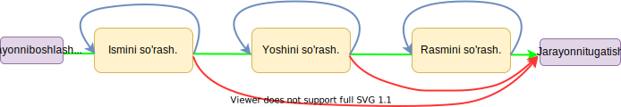

FSM (Steytlar)¶
Aiogramning eski versiyasi
Aiogram 3.x uchun ushbu bob bu yerda. (rus tilida!)
Bob yangilanishi (ko‘rsatish uchun bosing)
Bu bob 2022-yil sentabrida yangilandi, chunki steytlar aro biridan ikkinchisiga o'tish/qaytish usullari uchun xato maslahat/tushuncha berilgan. Xususan: steytning o'zida .set() usulini chaqirish tavsiya etilmaydi; Buning o'rniga FSMContext obyektida set_state() metodidan foydalanish yaxshiroq. Bundan tashqari, agar sizda ketma-ket aniq bo'lmagan xatti-harakatlar mavjud bo'lsa .next() metodidan foydalanmang.
Teoriya¶
Ushbu bobda biz botlarning, eng muhim xususiyati dialog tizimi haqida gaplashamiz. Afsuski, botdagi barcha amallarni bitta xabar yoki buyruqda bajarish mumkin emas. Aytaylik, tanishuv boti bor, u yerda ro'yxatdan o'tayotganda ismingizni, yoshingizni ko'rsatishingiz va rasmingizni yuborishingiz kerak. Siz, albatta, foydalanuvchidan rasm captionida hamma ma'lumotlarni yozib yuborishini so'rashingiz mumkin, ammo bu foydalanuvchi uchun ham sizning handleringiz uchun ham noqulay. Endi ma'lumotlarni bosqichma-bosqich kiritishni tasavvur qiling, bunda boshida bot ma'lum bir foydalanuvchidan ma'lum ma'lumotni kutish rejimini «yoqadi», so'ngra har bir bosqichda kiritilgan ma'lumotlarni tekshiradi va /cancel buyrug'i berilsa u keyingi qadamni kutishni to'xtatadi va asosiy rejimga qaytadi. Quyidagi sxemani ko'rib chiqing:

Yashil rang qadamlarni xatosiz o'tish jarayonini ko'rsatadi, ko'k joriy holatni saqlash va qayta kiritishni kutishni anglatadi (masalan, agar foydalanuvchi 250 yoshda ekanligini ko'rsatgan bo'lsa, siz yana yoshni so'rashingiz kerak), va qizil butun jarayondan chiqishni ko'rsatadi (masalan, /cancel buyrug'i dialogni to'xtatishi).
Yuqoridagi diagrammadagi jarayon FSM — Finite State Machine deb ataladi. Bu haqda ko'proq ma'lumotni bu yerda o'qishingiz mumkin.
Amaliyot¶
Aiogramda FSM mexanizmi pyTelegramBotAPIga qaraganda ancha yaxshi ishlab chiqilgan. Freymvork ma'lum bir steytlar orasida olingan ma'lumotlarni saqlash uchun turli xil backendlarga ega va steytlarga qo'shimcha ravishda siz o'zingizni ma'lumotlaringizni keyinchalik biror joyda foydalanish uchun saqlashingiz mumkin. Mavjud FSM xotira(storage)lar ro'yxatini aiogram reposida topish mumkin va bu bobda biz barcha ma'lumotlarni RAMda saqlaydigan eng oddiy MemoryStorage backendidan foydalanamiz. Bu bizning ko'rsatadigan misollarimiz uchun mos, lekin uni real loyihalarda ishlatish tavsiya etilmaydi, chunki MemoryStorage barcha ma'lumotlarni diskka o'tkazmasdan operativ xotirada saqlaydi. Shuni ham ta'kidlash joizki, FSM nafaqat xabarlar bilan ishlovchilar (message_handler, edited_message_handler), balki callbacklar va inline rejimi bilan ham qo'llanilishi mumkin.
Misol tariqasida biz kafeda oziq-ovqat va ichimliklar buyurtma qilish uchun steytlar yozamiz va shu bilan birga turli xil handlerlarni alohida fayllarda saqlashni o'rganamiz (Templating).
Muhim
Sahifada hamma bot kodlari ham ko'rib chiqilmaydi, o'qish oson bo'lishi uchun ba'zi importlar va handlerlar o'tkazib yuborilgan. Kodlarni GitHubda topish mumkin.
Minnatdorchilik
Tishka17ning tgbot_templatedan fayllar va kataloglar tuzilishi template(shablon) sifatida olindi. Ushbu bobda uning soddalashtirilgan versiyasi ko'rib chiqiladi, so'ngra bot murakkablashgani sayin fayl strukturasi kengayadi.
Umuman olganda, Rahmat!
Fayl va katalog tuzilishi¶
Botimizni ishga tushuruvchi fayl bot.py fayli bo'ladi, uning yonida bot.ini konfiguratsiya(sozlama)lar fayli bilan «config» papkasi joylashgan. Oldingi boblarda faqat bitta o'zgaruvchi environment variables orqali kiritilgan edi, lekin juda ko'p sozlamalar mavjud bo'lganida, alohida sozlamar faylidan foydalanish va uni standart Python Configparser bilan o'qish yaxshi. app papkasi ichida sozlamalar faylini o'qish uchun mas'ul bo'lgan config.py fayli, shuningdek, mantiqiy ravishda steytlarimizning turli qadamlari uchun handlerlar bilan handlers papkasi ham joylashgan.
Sxematik ravishda, yuqorida aytilganlarning barchasi quyidagicha ko'rinadi:
├── app/
│ ├── config.py
│ ├── handlers/
│ │ ├── common.py
│ │ ├── drinks.py
│ │ ├── food.py
│ │ └── __init__.py
│ └── __init__.py
├── config/
│ └── bot.ini
├── bot.py
└── requirements.txt
Modullar, fayllar va papkalar haqida
Pythondagi modullar *.py fayllarini boshqa papkalarda chaqirish o'zaro konflikt keltirmasdan import qilish, papkalardagi __init__.py fayllari haqida bilsangiz kerak endi. Batafsil ushbu devpractice.ru saytdan o'qib, o'rganishingiz mumkin.
Qadamlarni yaratish¶
Keling oziq-ovqatlar «buyurtma berish» bosqichini ko'rib chiqamiz. Boshlanishiga, app/handlers/food.py faylida biz kerakli obyektlarni import qilamiz va taomlar hamda ularning portsiya hajmlarini alohida listlarga yozib chiqamiz (realda bu ma'lumotlarni har qanday DBdan dinamik ravishda yuklashingiz mumkin):
from aiogram import Dispatcher, types
from aiogram.dispatcher import FSMContext
from aiogram.dispatcher.filters.state import State, StatesGroup
available_food_names = ["sushi", "spagetti", "xachapuri"]
available_food_sizes = ["kichik", "o'rtacha", "katta"]
Keling, ma'lum bir jarayonning barcha mumkin bo'lgan «holatlarini» yozib chiqaylik (oziq-ovqat tanlash): foydalanuvchi /food buyrug'ini chaqiradi, bot sizdan taom tanlashni so'ragan xabar bilan javob beradi va foydalanuvchidan *taom tanlanishini kutish* steytiga tushadi. Foydalanuvchi tanlovni amalga oshirishi bilanoq, bot kiritilgan ma'lumotlarning to'g'riligini tekshiradi va keyingi steytda *portsiya hajmi*ni tanlashini kutib turadi. Foydalanuvchi bu yerda ham to'g'ri ma'lumotlarni kiritganida, bot yakuniy natijani (buyurtmani) ko'rsatadi va jarayon yakunlanadi (finish). Keyinroq, /cancel buyrug'i bilan istalgan bosqichda steytdan chiqish (jarayonni bekor qilish)ni o'rganamiz.
Endi, steytlarimizni yozamiz. Ularni foydalanuvchi borishi kerak bo'lgan tartibda aniq yozish tavsiya etiladi (ya'ni birinchi taom tanlash, so'ngra portsiyani tanlash), bu kodni tushunarliroq qiladi. Steytarni saqlash uchun siz StatesGroup classidan meros class(steyt guruhi) yaratib, uning ichida State klassi ekzemplyariga teng o'zgaruvchilar yaratishimiz kerak:
class OrderFood(StatesGroup):
waiting_for_food_name = State()
waiting_for_food_size = State()
/food buyrug'iga javob beradigan birinchi qadam(steyt) uchun handlerini yozamiz (uni keyinroq ro'yxatdan o'tkazamiz):
# E'tibor bering: ikkinchi argument mavjud
async def food_start(message: types.Message, state: FSMContext):
keyboard = types.ReplyKeyboardMarkup(resize_keyboard=True)
for name in available_food_names:
keyboard.add(name)
await message.answer("Taom tanlang:", reply_markup=keyboard)
await state.set_state(OrderFood.waiting_for_food_name.state)
Oxirgi qatorda biz botga OrderFood guruhidan waiting_for_food_name steytini o'rnatishini aytdik. Endi u /food buyru'gidan keyin taomlarimiz menyusi bilan foydalanuvchidan ma'lumot kutib turadi.
Quyidagi funksiya esa foydalanuvchidan olingan matnni saqlab (agar u to'g'ri bo'lsa) keyingi bosqichga o'tkazadi:
1 2 3 4 5 6 7 8 9 10 11 12 13 | |
Keling, yuqoridagi kodning ba'zi qatorlarni alohida tahlil qilaylik. food_chosen funksiya (1-qator) FSMContext turidagi ikkinchi state argumentga ega. U orqali siz FSM-backendidan ma'lumotlarni olishingiz mumkin. 2-qator foydalanuvchidan kelgan matnni tekshiradi. Agar u o'zboshimchalik bilan matn kiritgan bo'lsa va tugmalardan foydalanmasa, xato haqida xabar berishimiz va funksiyani muddatidan oldin tugatishimiz kerak. Bunday holda, foydalanuvchining qadami o'zgarmay qoladi va bot yana taom tanlanishini kutadi. Biz 5-qatorda, foydalanuvchi taomni to'g'ri kiritganiga уже aminmiz, shuning uchun biz qabul qilingan matnni FSM bazasiga xavfsiz saqlashimiz mumkin. update_data() funksiyasidan foydalanamiz va xabar matnini chosen_food kaliti ostida message.text.lower() qiymati bilan saqlaymiz. 11-qatorda biz foydalanuvchini keyingi bosqichga o'tkazishga tayyormiz va ichida kerakli steyt bilan set_state(...) metodini chaqiramiz.
Porstiya hajmini olish (shunga o'xshash matn tekshiruvi bilan) va natijalarni foydalanuvchiga ko'rsatish uchun javobgar oxirgi funksiyani yozish qoldi:
async def food_size_chosen(message: types.Message, state: FSMContext):
if message.text.lower() not in available_food_sizes:
await message.answer("Iltimos, menyudan foydalaning.")
return
user_data = await state.get_data()
await message.answer(
f"Buyurtma: {user_data['chosen_food']} taomidan {message.text.lower()} ports.\n"
f"Ichimlik buyurtma berish uchun: /drinks",
reply_markup=types.ReplyKeyboardRemove()
)
await state.finish()
E'tiboringizni qarating: Birinchidan, biz FSMdan saqlangan ma'lumotlarni statening get_data() metodi yordamida olishimiz mumkin. Ikkinchidan, bu ma'lumotlar dict ko'rinishida saqlangani uchun, olishda user_data['chosen_food']dan foydalanishimiz mumkin (dictda qaysidir kalit bo'lmasligi mumkinligini unutmang, bu KeyErrorga olib keladi, yaxshisi .get('chosen_food') metodidan foydalaning). Uchinchidan, finish() metodini chaqirish nafaqat steytni to'xtatadi, balki saqlangan ma'lumotlarni ham o'chiradi. Agar siz faqat steytni to'xtatishingiz kerak bo'lsa, await state.reset_state(with_data=False)dan foydalaning.
Va nihoyat, yuqoridagi funksiylarning handlerlarini ro'yxatdan o'tkazish uchun alohida bitta funksiya yozamiz, u argumentida dispetcherni qabul qiladi. food_start()ni ro'yxatdan o'tkazishda steyt parametriga "*" qiymatini qo'yganimiz istalgan qadam(steyt)dan chiqib ishlashini bildiradi. Qo'pol qilib aytganda, agar foydalanuvchi *portsiya hajmini tanlash* steytida bo'lsa-yu, lekin qaytadan boshlashga qaror qilsa va /foodga buyruq bersa, bot food_start()ni chaqiradi va butun jarayonni qaytadan boshlaydi.
def register_handlers_food(dp: Dispatcher):
dp.register_message_handler(food_start, commands="food", state="*")
dp.register_message_handler(food_chosen, state=OrderFood.waiting_for_food_name)
dp.register_message_handler(food_size_chosen, state=OrderFood.waiting_for_food_size)
Ichimlik tanlash bosqichlari ham xuddi shu tarzda amalga oshiriladi. Buni o'zingiz sinab ko'ring yoki ushbu bobning githubda manbalariga qarang.
Umumiy buyruqlar¶
Biz steytlarni qayta boshlash yoki to'xtatish haqida gapirayotgan ekanmiz, keling, app/handlers/common.py faylida /start buyrug'i va «bekor qilish» amaliga javob beruvchi handlerlarni yozamiz. Birinchisi xush kelibsiz/qo'llanma matnini ko'rsatadi, ikkinchisi esa "Harakat bekor qilindi" deb yozadi. Ikkala funksiya ham steyt va ma'lumotlarni o'chirib yuboradi va agar mavjud bo'lsa, replykeyboardni olib tashlaydi:
async def cmd_start(message: types.Message, state: FSMContext):
await state.finish()
await message.answer(
"Buyurtma qilmoqchi bo'lgan narsani tanlang:\n"
"ichimliklar (/drinks) yoki taom (/food).",
reply_markup=types.ReplyKeyboardRemove()
)
async def cmd_cancel(message: types.Message, state: FSMContext):
await state.finish()
await message.answer(
text="Harakat bekor qilindi",
reply_markup=types.ReplyKeyboardRemove()
)
Ikkila handlerni ro'yxatdan o'tkazamiz:
def register_handlers_common(dp: Dispatcher):
dp.register_message_handler(cmd_start, commands="start", state="*")
dp.register_message_handler(cmd_cancel, commands="cancel", state="*")
dp.register_message_handler(cmd_cancel, Text(equals="bekor qilish", ignore_case=True), state="*")
Nega ikkita emas, uchta qator? Gap shundaki, bitta handlerni turli xil hodisalarda chaqirish mumkin. Bu yerda biz /cancel buyrug'ida ham, "Bekor qilish" xabarini (katta-kichik harflarda) yuborishda ham chaqiriladigan cmd_cancel() funksiyasini ro'yxatdan o'tkazdik. Aytgancha, agar siz dekoratorlardan foydalanmoqchi bo'lsangiz, u quyidagicha ko'rinadi:
@dp.message_handler(commands="cancel", state="*")
@dp.message_handler(Text(equals="bekor qilish", ignore_case=True), state="*")
async def cmd_cancel(message: types.Message, state: FSMContext):
...
Kirish nuqtasi¶
Keling, bot.py fayliga qaytaylik va ikkita funksiya yozaylik: set_commands() va main(). Birinchisida biz Telegramda Menyu yoki [ / ] tugmasini bosishda chiqadigan, buyruqlar ro'yxatini kiritamiz, ikkinchisida esa botni ishga tushirish uchun kerakli amallarni bajaramiz: handlerlarni ro'yxatga olish, konfiguratsiya faylini o'qish, Bot va Dispetcherni yaratish, va nihoyat botni polling rejimida ishga tushirish:
# Importlarni unutmang
logger = logging.getLogger(__name__)
# Telegramda ko'rsatiladigan
# buyruqlarni ro'yxatdan o'tkazish
async def set_commands(bot: Bot):
commands = [
BotCommand(command="/drinks", description="Ichimlik buyurtma berish"),
BotCommand(command="/food", description="Taom buyurtma berish"),
BotCommand(command="/cancel", description="Joriy harakatni bekor qilish")
]
await bot.set_my_commands(commands)
async def main():
logging.basicConfig(
level=logging.INFO,
format="%(asctime)s - %(levelname)s - %(name)s - %(message)s",
)
logger.error("Starting bot")
# bot.ini faylini o'qish
config = load_config("config/bot.ini")
# Bot va dispetcher obyektlari
bot = Bot(token=config.tg_bot.token)
dp = Dispatcher(bot, storage=MemoryStorage())
# Handlerlarni ro'yxatdan o'tkazish
register_handlers_common(dp)
register_handlers_drinks(dp)
register_handlers_food(dp)
# Bot buyruqlarini sozlash
await set_commands(bot)
# Botni pollingda ishga tushurish
# await dp.skip_updates() # eski updatelarni o'tkazib yuborish (ixtiyoriy)
await dp.start_polling()
if __name__ == '__main__':
asyncio.run(main())
Endi, FSM bilan qurollangan holda, siz qo'rqmasdan dialog tizimli botlarni yozishingiz mumkin.